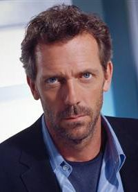

DATOS PERSONALESNOMBRE: Hugh Laurie DIRECCIÓN: La gran manzana 26, bajo DNI: 012345678T Teléfono: +0331234567 Movil: 666554433 Lugar de nacimiento: Oxford (Inglaterra) Fecha de nacimiento: 11 de Junio de 1959 Estado civil: Casado y con 3 hijos. |
 | |
OBJETIVO PROFESIONALPienso que soy el candidato idóneo para la cuarta temporada de House. Además creo que mi participación en la serie los 3 años anteriores dan una idea del conocimiento interno que tengo de ella. Mi perfil como actor permite versatilidad, humos e improvisación. Mi aspecto me permite representar una infinidad de personajes Pretendo Ganar el Emmy en la próxima convocatoria, dirigir mi primera película y publicar mi segundo libro. DATOS DE FORMACIÓN formación reglada 1961-1970: Primaria en el colegio Dragon school de Oxford. 1970-1975: Secundaria en el instituto Selwyn College de Oxford. 1975-1981: Licenciatura en Arqueología y Antropología por la universidad de Cambridge. formación no reglada 1982: Cursillo del inem: “Conviértase en actor” 40 horas. 1982: Cursillo en el café de la esquina: “Tarzán, de niña a mujer. Un acercamiento al mundo de los armarios” 1 hora. EXPERIENCIA LABORAL 1992: Los amigos de peter 1995: Sentido y sensibilidad 1996: Escribo el libro “The Gun seller” 1996: 101 Dálmatas. 1997: Spice Girls 1998: El hombre de la máscara. 1998: Episodio de Friends 1999: Stuart Little 2000: Maybe Baby 2001: The piano turner 2002: Stuart Little 2 2003: The Young Visiters 2004: House 2007: The Night Watchman Idiomas Inglés Nativo Valenciano: leído bien, hablado mal. Otras habilidades / Hobbys Escritor: The gun seller (1996), The paper soldier (2007) Director: "Fortysomething" (1 episode, 2003) Guionista: Dragans of New York (2002), "A Bit of Fry and Laurie" (1987-1995) episodios 3,4,5,6 y 7 Productor: Dragans of New York (2002) (TV) (producer) Compositor: "House." (1 episode, 2004), Damned If You Do (2004) TV Episode (performer: "Silent Night"), Maybe Baby (2000) (writer: "Sperm Test In The Morning"), Peter's Friends (1992) (writer: "Roger's Coffee Commercial Jingle") Doblador películas infantiles: Stuart Little, Stuart Little 2, Valiant, 101 dálmatas. |